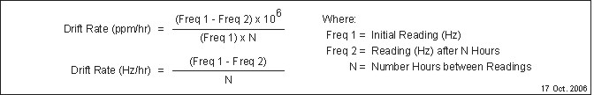

Operating Documentation
Direction 5670000, Rev# 1
Optima MR450w 1.5T Service Methods
Module Version 3.0, Version Date 12/10/09
Operating Documentation |
| Required Persons | Preliminary Reqs | Procedure | Finalization |
|---|---|---|---|
| 1 | Included in 'Procedure' | .25 hours ± .25 hours | .25 hours |
The following check is made to determine the “uncompensated" main field drift of the magnet. Compensated drift is also performed in the factory and requires a very tightly controlled environment. Contact the factory through the GE Magnet and Cryogenic (MAC) field specialist if compensated drift information is required.
| Item | Qty | Effectivity | Part# | Manufacturer | |
|---|---|---|---|---|---|
| Warning Sign: “Authorized Personnel Only” | 1 | - | 2289812 | - | |
| Brass Master Padlock with Brass Shackle | 1 | - | 46-194427P320 | - | |
| Brass Master Transition Padlock | 1 | - | 2387081 | - | |
| Black & White on Red Lockout Tag, package of 25 | 1 | - | 46-194427P322 | - | |
| Transition LOTO Tag | 1 | - | 46-194427P313 | - | |
| Line Cord Plug Cover, Plugs ≤ 3 in. (76 mm) wide x ≤ 5.875 in. (149 mm) long, Cords ≤ 1.25 in. (31 mm) dia. | 1 | - | 46-194427P321 | - | |
| MetroLab Teslameter Kit (or equivalent magnetic field measuring device) | 1 | - | 46-251865G4 | - | |
| #6 Teslameter Probe | 1 | - | 2295525-5 | - | |
| Digital Voltmeter (DVM) | 1 | - | - | - | |
| Service Methods documentation for the magnet/enclosures (available through the Common Document Library at gehealthcare.com or through your local GE Healthcare Service Representative) | 1 | - | - | - | |
| ||||
| Electrical Shock Hazard | ||||
| Contact with connectors leading to an energized power supply can cause electrical shock. | ||||
| Follow lockout/tagout procedures while making electrical connections to a shim power supply or a Teslameter. See OSHA Lockout-Tagout. |
| Condition | Reference | Effectivity |
|---|---|---|
The removal of some magnet enclosure components may be required to complete Field Stability Check. Refer to Upper and Side Enclosure Removal (Wide Open enclosures) and the appropriate Service Methods documentation (available through the Common Document Library at gehealthcare.com or through you local GE Healthcare Service Representative) before continuing with Field Stability Check if cover removal is required. | - |
| ||||
| Moving equipment may effect magnetic field readings. | ||||
Post “Authorized Personnel Only” signs (2289812) in conformance with 2301164PRE, MR Magnet ― Safety Requirements to indicate a magnetic drift test is in progress. Do not move or rearrange any articles or equipment in or near the exam room during the test.
Set up the MetroLab Teslameter and #6 Probe for single point field measurement in conformance with Preparations for Field Measurement making sure the probe is at the physical center (R = 0, Z = 0) of the magnet.
Set the Teslameter switch to “NMR Frequency (Hz)" and allow the Teslameter to stabilize within a 10 Hz band.
Connect the Shim Power Supply to the magnet in conformance with the Preparations for Shimming subsection of Shimming.
Remove all shim currents in conformance with the Removing Transverse and Axial Shim Currents subsection of Field Adjustment after Shimming.
Set all Shim Heater switches to “I" (on). After 3 minutes record the frequency as “Frequency 1" in Magnet Uncompensated Drift Log, then set all Shim Heater switches to “O” (off).
| ||||
| Do not move the probe between the first and second measurements. | ||||
Repeat Step 4 through Step 6 after 24 hours. Record this frequency as “Frequency 2" in Magnet Uncompensated Drift Log, then set all Shim Heater switches to “O” (off).
Calculate the 24-hour main field drift rate by using the following formula:

If the drift rate is > 0.1 ppm/hr, contact the MAC Team Representative or the Regional Service Engineer. High drift rates will require frequent field adjustment and reshimming.
| NOTE: | The Teslameter has a resolution of ± 5 Hz; therefore, a month or more may be required to establish a significant frequency difference (drift rate). |
| ||||
| Electrical Shock Hazard | ||||
| Contact with connectors leading to an energized power supply can cause electrical shock. | ||||
| Follow lockout/tagout procedures while making electrical connections to a shim power supply or a Teslameter. |
Disconnect and lockout/tagout input power to the Shim Power Supply. Verify that no voltage is present by using a DVM or equivalent measuring device.
Disconnect the Shim Power Supply from the magnet. Store the Shim Power Supply and cables.
Disconnect and lockout/tagout input power to the Teslameter. Verify that no voltage is present by using a DVM or equivalent measuring device.
Disconnect the Teslameter from the probe. Store the Teslameter and probe.
Remove and store the “Authorized Personnel Only” signs.